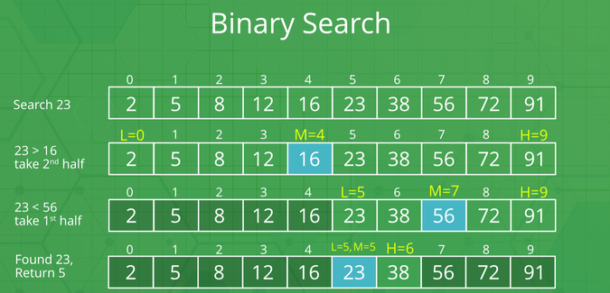
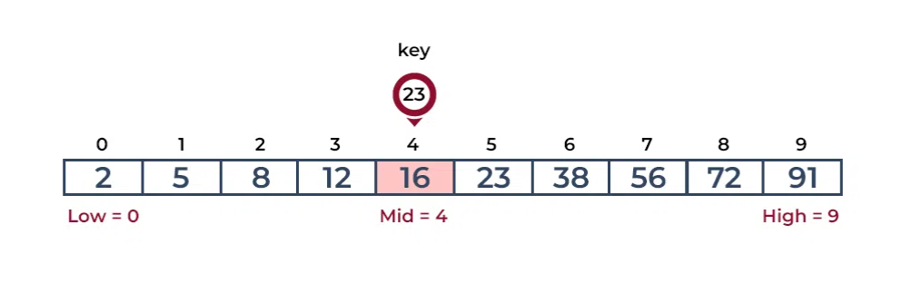
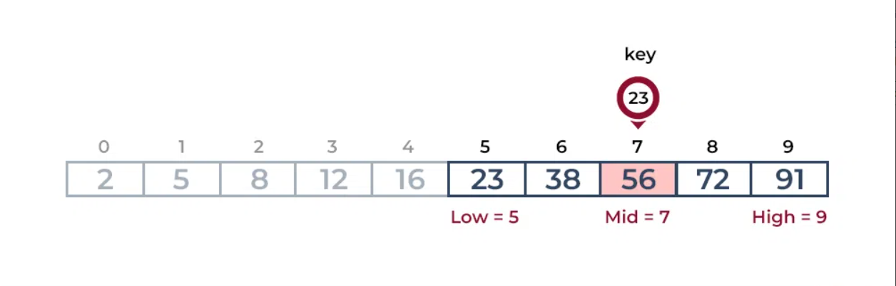
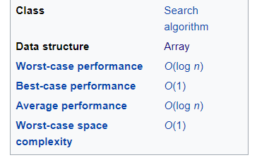

"Quiz Time:Test Your Brainpower!"
Quiz SimulationBINARY SEARCH
BINARY SEARCH
What is Binary Search ?
Binary Search is defined as a sequential search algorithm that starts at one end and goes through each element of a list until the desired element is found, otherwise the search continues till the end of the data set.

How does Binary Search work?
For example: Consider an array arr[] = {2, 5, 8, 12, 16, 23, 38, 56, 72, 91}, and the target = 23.
Step 1: Calculate the mid and compare the mid element with the key. If the key is less than mid element, move to left and if it is greater than the mid then move search space to the right.
● Key (i.e., 23) is greater than current mid element (i.e., 16). The search space moves to the right.

● Key is less than the current mid 56. The search space moves to the left.

Step 2: If the key matches the value of the mid element, the element is found and stop search.
Time Complexity

Best Case:
In the best-case scenario, the target element is found at the middle of the array, requiring only one comparison to determine its presence.
Therefore, the time complexity in the best case is constant, represented as O(1).
Average and Worst Case:
● In the average and worst-case scenarios, binary search repeatedly halves the search space until the target element is found or the search space is empty.
● At each step, the search space is divided in half, resulting in a logarithmic decrease in the search space with each comparison.
● Hence, the time complexity in both the average and worst cases is logarithmic, represented as O(log n), where 'n' is the number of elements in the array.
Advantages of Binary Search
●Efficiency: Binary search is fast, especially for large datasets, as it halves the search space with each step.
● Logarithmic Time Complexity: It has a time complexity of O(log n), ensuring quick search times even with huge datasets.
● Simple Implementation: Despite its efficiency, binary search is straightforward to implement, requiring basic logic.
● Space Efficiency:It doesn't need much additional memory beyond the original dataset, making it space-efficient..
● Faster Than Linear Search: Compared to linear search, binary search is notably faster, particularly for large datasets.
● Works with Sorted Data: Binary search is most effective with sorted data, leveraging its structure to swiftly find elements.
●Versatility: Binary search isn't limited to arrays; it can also be used with other sorted structures like trees, enhancing its applicability.
Disadvantage of Binary Search
● Requires Sorted Data: Binary search only works with sorted data, so if the data isn't sorted, you'll need to spend extra time sorting it first.
● Limited Applicability: It's not suitable for data structures that don't support random access, like linked lists, because accessing middle elements efficiently is crucial for binary search.
●Extra Space Overhead: While binary search doesn't require much additional memory, it does require extra space for indices or pointers, especially in recursive implementations.
●Complexity of Implementation: Though simpler than some other search algorithms, binary search can be more complex to implement correctly, especially for beginners.